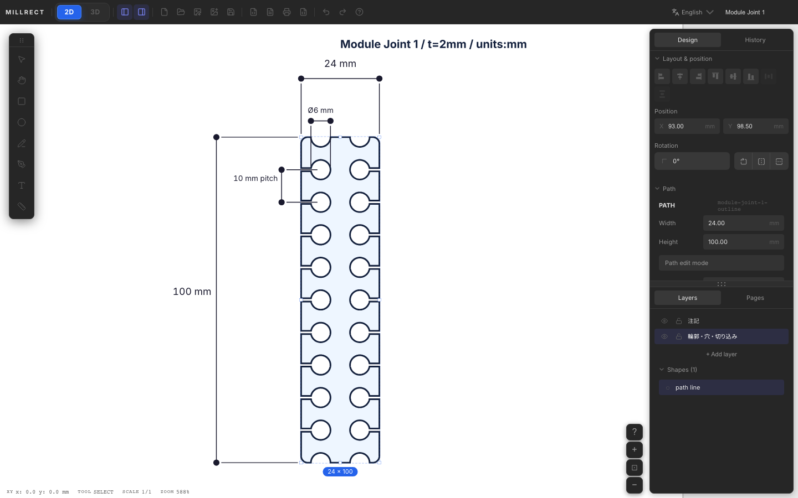
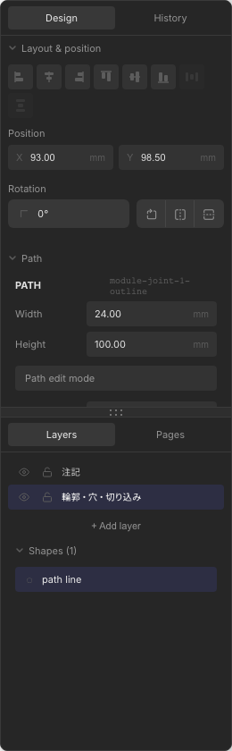
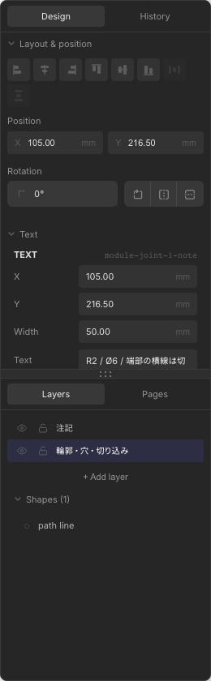
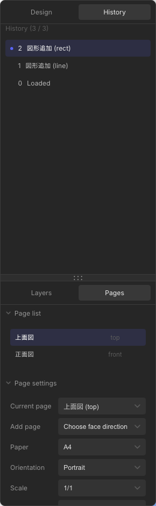

Editing
Shape selection, property editing, alignment and distribution, grouping, boolean union/subtract, and Undo/Redo.
Selection and movement
Click a shape with the select tool (V) to select it. Shift+click for multi-select; drag for marquee selection.
- Selected shapes show a frame with handles
- Drag inside the frame to move; corner handles to resize
- Arrow keys move 1 mm (Shift+arrow for 10 mm)
- Ctrl+A (Mac: Cmd+A) selects all shapes and dimensions

Design tab (properties)
In the right panel Design tab, edit coordinates, size, fill and stroke, line width, and more for the selected shape. With multiple shapes selected, alignment buttons and bulk appearance changes are available.

Appearance (fill & stroke)
With one shape selected, set colors in the Appearance section of the property list. In addition to the 2D drawing, colors are reflected in the 3D preview mesh (3D Generation — Color mapping).
| Property | Description |
|---|---|
| Fill | Pick fill color. None restores transparency (outline only) |
| Stroke | Outline color. For text shapes, used as text color |
| Presets | Click an 8-color swatch to apply to fill or stroke immediately |
| New drawings | Colors chosen here become defaults for the next rectangle, circle, line, etc. |
Fill applies to rectangles, circles, paths, and closed beziers. Lines and text use stroke only; dimensions use a dedicated dimension color field.
With two or more shapes selected, Appearance (bulk) applies the same fill and stroke to all selected shapes.
| Property | Description |
|---|---|
| Position & size | Per shape type: X/Y/W/H for rectangles, center and radius for circles, etc. |
| Line width | Thin / medium / thick |
| Corner radius (rx) | Rectangles only |
| Rotation & flip | Reflected in display, alignment, Profile extraction, and 3D generation |
Bulk size editing
Select two or more shapes of the same type and a Size (bulk) section appears in the Design tab, letting you apply the same dimension to every selected shape at once — for example, select several circles and set them all to the same radius.
| Shape type | Bulk-editable fields |
|---|---|
| Circle | Radius |
| Rectangle | Width & height |
| Ellipse | RX & RY (horizontal / vertical radius) |
| Text | Font size |
- When the selected shapes share a value it is shown; when they differ the field shows Mixed
- Entering a value applies it instantly to all selected shapes of that type (centers and positions are kept)
- Locked shapes are skipped. The change is recorded as a single step and can be reverted with one Undo
If the selection mixes different shape types (e.g. a circle and a rectangle) there is no common dimension, so "Size (bulk)" is hidden. Bulk appearance and alignment still work.
Alignment and distribution
With two or more shapes selected, alignment buttons appear in the Design tab.
| Action | Description |
|---|---|
| Align left / center / right | Align horizontally |
| Align top / center / bottom | Align vertically |
| Distribute horizontally / vertically | With 3+ selections: fix ends and equalize spacing |
With a single selection, you can also align to page (paper) edges or center.
Copy, duplicate, delete
- Ctrl+C / Ctrl+V — Copy and paste
- Ctrl+D — Duplicate selection in place
- Delete / Backspace — Delete selected shapes
Grouping
Select two or more shapes and press Ctrl+G to group. Groups move and select like a single shape. With a group selected, Ctrl+Shift+G ungroups.
Groups themselves are not 3D outlines. Each shape inside a group is profiled individually.
Text outline conversion
With a text shape selected, the Design tab shows Edit text and Outline. The same actions are available from the right-click menu.
- Edit text — Edit string, font, size, line height, and color in a dialog
- Outline — Convert each character to a path shape and combine into one group
After outlining, the original text is removed and path shapes in the group become 3D outlines. Text color (stroke) carries over as path fill color.

Available only in the Electron app. Core Text on macOS; fontkit on other OSes for outline generation.
Union and subtract (Boolean)
With two or more closed outlines selected (rectangle, circle, closed bezier, path, etc.), boolean operations are available. Right-click → Boolean, or use Design tab buttons.
| Operation | Shortcut | Description |
|---|---|---|
| Union | Alt+Shift+U | Combine multiple outlines into one path |
| Subtract | Alt+Shift+S | Subtract back from front (cut holes) |
| Intersect | Alt+Shift+I | Keep overlap only |
| Exclude | Alt+Shift+E | Keep everything except overlap |
| Flatten | Alt+Shift+F | Flatten selected paths / groups into one path |
Results are new path shapes usable as 3D outlines.
Undo / Redo and History tab
Operations that affect the document — adding, moving, or deleting shapes — are Undo targets. Use toolbar Undo/Redo or Ctrl+Z / Ctrl+Y (Mac: Cmd+Z / Cmd+Shift+Z).
The right panel History tab lists operation history. Click a row to jump to that state. Zoom, pan, and tool changes are not recorded.

Layer lock
Lock a layer in the Layers tab to prevent selecting or editing shapes on that layer. Useful for draft layers or reference line layers.